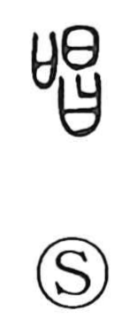

唱

Uncategorized
Kun: tonaeru | On: shou
to chant ・ to recite ・ to sing
Explanation
A phono-semantic graph with 昌 as its phonetic and on-reading marker shou. 昌 depicts two sun/star forms (日) stacked, signifying radiant brightness—compare 晶, which shows three stars and an even stronger brilliance. From this sense of radiant flourishing, 昌 also came to mean “prosperous,” and in 唱 that vivid brilliance is applied to the voice, yielding the idea of a powerful, ringing song or chant. Hence 唱 means “song,” “to call out loudly,” and “to recite,” and related graphs such as 倡 and 娼 point to those who sing and dance.